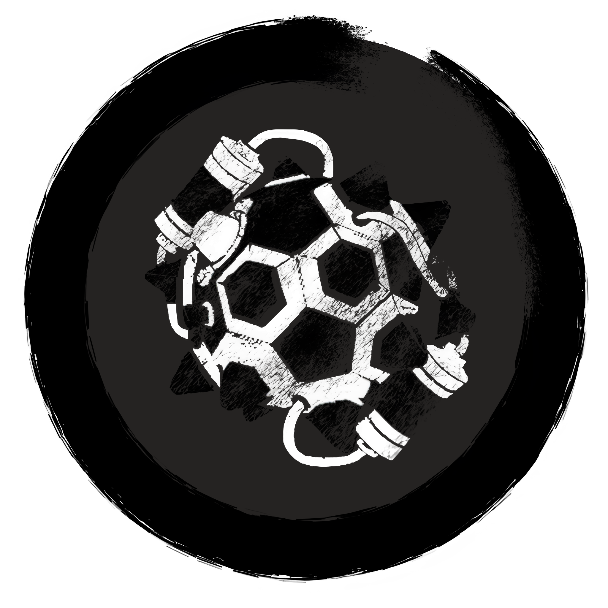

4v4 PASS Time Guide (ASIA + OCE)
Ver 2.2.0 4/27/26
BASICS
Note: a new tutorial video for asia will be made sooner or layer, this shall serve as a placeholder
MAP PHILOSOPHY & CALL OUTS
Even if maps may differ from eachother the general lay out is consistent. The gold standard for map design currently
is the original, pass_arena2. All maps are symmetrical, so the call outs for
one side are the same for the other.
Note: Whether or not a call out is left/right depends on the perspective of your goal. For example, if you're facing your own side, the Fence to YOUR left is "right Fence"
Goal side

(also include mini screenshots of the same call outs from other maps)
Goal
- This is the Goal. If you throw the jack into the enemy Goal you get 1 score, and vice versa.
pass_thesis goal
Goal Ramp
- A common structure on many maps, these are ramps on the side of the Goals that Demo players can trimp on.Gay/Pride
- A very steep ramp above the Goal. Some maps have larger Gays than others, and some allow you to pixel walk along the top.Left/Right Corner
- Small pockets to the side of each goal which usually has Pults in the corners.Left/Right Ground
- The ground infront of spawn doors to the left and right of goal.Left/Right Fence
- Structures in front of the goal that act as cover and are used for jumping and/or trimping.Left & Right side

(also include mini screenshots of the same call outs from other maps)
Left/Right Shelf
- Long elevated portions of the map on each side that span from one team's side to the other. Usually flat, but there are maps replace shelf with surfable ramps.
pass_torii shelf ramps
Upper/Top Left/Right
- Long surfable ramps above shelf.High Left/Right
- The sky above the ramps. This is called out after a player jumps/cabers the surf ramp and are in the air and not surfing on the ramp or did a sync jump.Middle

(also include mini screenshots of the same call outs from other maps)
Upper/Top (mid)
- A large platform in the middle of the map. The jack spawners are usually above and/or below this platform.Lower (mid)
- The ground under the platform. Usually indented and have slopes that demomen and soldiers can ramp slide on.Goblin
- A small crawlspace on each side of mid.Lower Left/Right (Demothing)
- This is usually connected to shelf and mid. This usually has a shallow ramp and a steep ramp that are used in a move called a "Demothing".See Dictionary for more details.
Left/Right Dark
- Dark covered areas under shelf that normally have small health packs. Sometimes has a surfable ramp.HIGH/SPACE

Left/Right Ultra
- Tall pillars on each side that have sloped tops that you can pixel walk on.Leaf
- Small platforms that surround the dropper spawn.Left/Right Galactic
- Long beams that span from the side walls to the dropper spawn that you can usually walk on.Space/Skybox
- All the empty space above the map.BOMBS (WIP)
This section will highlight very common (named) Bombs & Self Bombs
Note: You don't have to call these out before doing them, its just useful to be able to distinguish them
-
Waddle
- The most basic way to score the ball. Just walk towards the goal and throw. -
Demothing
- Throwing the ball on a shallow ramp then trimping to pick up the ball and score.
-
Caberthing
- A demothing where you caber the ground or the ball itself before you pick up it up to gain extra height.
-
Glop Bomb
- Jumping forward and surfing on either of the upper ramps while the ball (locked onto the player) is still homing towards them, then jumping once in front of the goal to score. -
Shelfie
- Throwing the ball on shelf and pogoing to pick it up at the end and score. -
Pult Bomb (Jman Bomb)
- Throwing the ball on the ground for it to neutral and bounce onto the pult, then jumping mid air to catch and score.
-
Water Bomb
- Any self bomb that starts with the soldier jumping in a puddle of water which greatly increases velocity. -
Death Bomb
- Any self bomb that ends with the player killbinding while the ball is locked on for it to fall into the goal. -
Double Extender
- A self bomb that allows you to perform a double extender on upper left/right from the ground.
-
Blu2th
- Trimping on the ultra ramps then using your caber to get extra height for you to instadet on the ball in space. -
Winstrat (Upper)
- Wall jumping or sync-ing a pipe and caber to gain enough height to pick up the ball as soon as it spawns from the top spawner. -
Winstrat (Lower)
- Trimping or ramp sliding on lower fast enough to pick up the ball as soon as it spawns from the lower spawner.
ROLL OUTS (WIP)
This section will showcase common rollouts for each class and when they are usually seen. Rollouts are not required, but they can be very useful for getting to mid faster and contesting the ball spawns.
Note: The Barnacle/Medic rollout are Asia-specific due to the quickfix and vsh-climb being exclusive to that region
-
Upper left/right
- Useful for rolling out on offense. -
Lower left/right
- Ramp sliding or trimping on lower left/right on offense. -
Upper Middle
- Most seen at during set up when soldiers contest for ball possession. -
Lower Middle
- Most seen during set up when demos and medics contest for ball possession. -
Left/Right Shelf
- Pogo-ing on shelf to get position faster. -
Barnacle Rollout
- Using the quickfix on one of your soldiers that are rolling out to roll out with them.